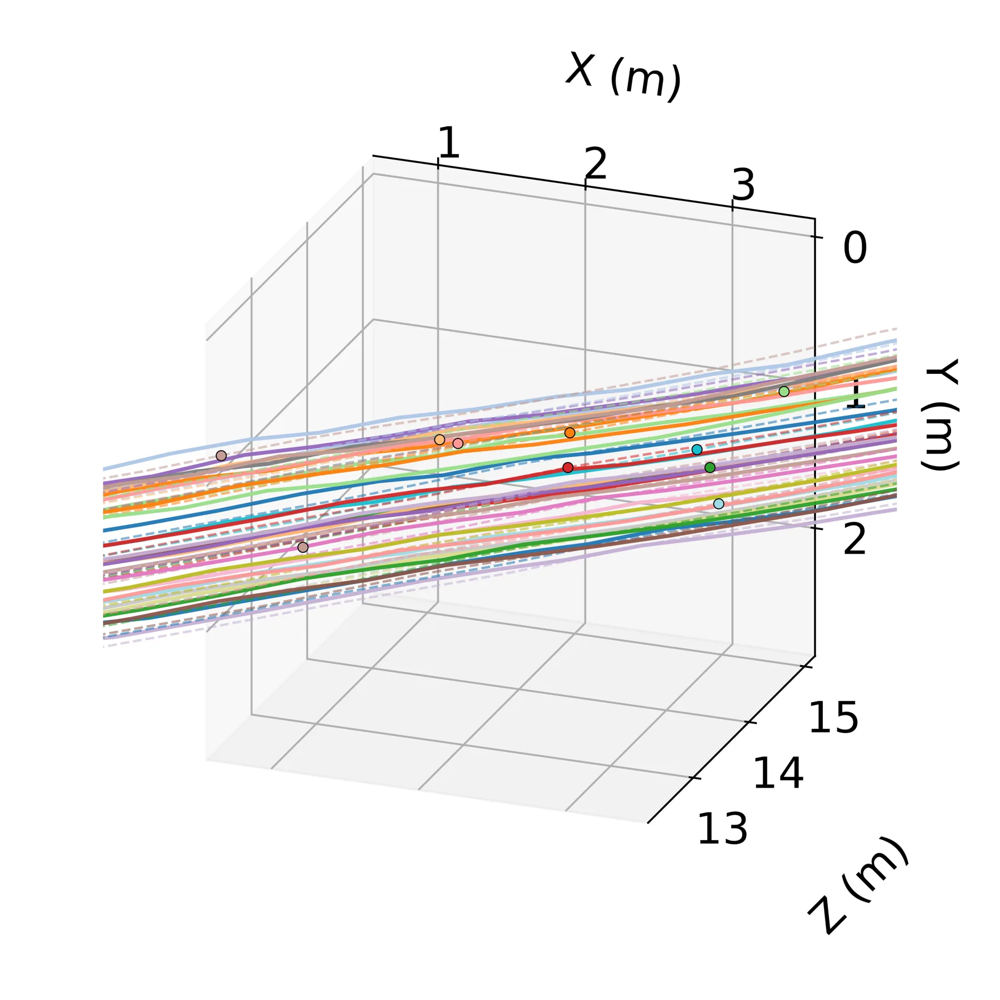

用状态空间模型做度量 3D 点跟踪
3D Point Tracking with State Space Models
组合两个冻结前端（稠密光流 + DA3 单目度量深度），只用一个 Mamba-3 状态空间模型学沿射线深度的残差；TAPVid-3D minival 绝对度量 mean metric-AJ 0.256（基线 0.147、DELTA 0.183），refiner 仅加约 11M 参数、6–12 fps。
metric-AJ
ablation
params
throughput
作者、单位与技术谱系 · Research context
作者与单位
研究脉络
- 稠密光流（SEA-RAFT / WAFT）方法基座关系：作为冻结的 2D 对应前端，提供被固定的图像轨迹。[论文第 3.4 节与表 2]
- Depth Anything 3（单目度量深度）方法基座关系：作为冻结的第三维来源，提供沿射线的初始度量深度。[论文第 3.5 节与第 4 节]
- Transformer 型 3D 跟踪器（DELTA、SpatialTrackerV2、TAPIP3D）上游对照关系：作为同等硬件预算下的对照，本方法用 SSM 换取恒定内存优势。[论文第 4–5 节]
合作网络
- 东京大学内部跨系署名Department of Precision Engineering（Ogawa） → Department of Human and Engineered Environmental Studies（An, Yamashita）关系：共同署名[arXiv 首页署名]
- 对 Mamba-3 / DINOv3 的技术依赖本方法精化器 → Mamba-3 + DINOv3 特征关系：明确技术依赖[论文摘要与第 3.7–3.8 节]
作者与单位取自 arXiv 首页署名；脉络依据论文引用与自述；论文为 Computer Vision and Image Understanding 投稿，未声明公开代码。
方法本质拆解 · What actually changed
是不是微调？
只训练新增的紧凑精化器（mamba3/vmamba3，约 0.44M–0.79M 可学参数，含可见性头），光流前端与 DA3 度量深度骨干全程冻结。因此可学权重仅限深度残差模块，属「冻结前端 + 轻量残差学习」范式。
有没有额外约束？
核心结构约束是「只沿像素射线修正深度」——2D 轨迹由冻结光流固定，精化器不得改动 2D 位置，只能动深度；vmamba3 额外把 DINOv3 外观特征与局部深度 patch 作为条件输入。另有 depth scale refiner 在细化前定标逐帧深度以稳住尺度。
推理/后端到底做了什么？
推理是无位姿、单目前的组合：光流出 2D 轨迹 → DA3 出度量深度 → 反投影 → Mamba-3 沿射线修正深度 → 输出 3D 轨迹；SSM 的循环状态大小固定、内存不随帧数增长。无 BA、无相机位姿求解、无全局优化。
方法本质是什么？
本质是把「度量 3D 跟踪」归约为「沿射线的深度估计」：一旦 2D 轨迹固定，度量精度就只由深度决定，于是只学深度残差即可，且用 SSM 换掉 Transformer 以守住单卡内存。它没有做的是超越尺度不变排行榜指标，也没消除远场深度偏置。
输入为单目视频（无位姿、无外部传感器）；改变的位置是在冻结光流+度量深度前端上只学沿射线深度残差；约束/合并动作是 Mamba-3 状态空间精化（可加外观/几何条件与可见性头）；直接效果是单卡下取得最高绝对度量 3D 跟踪精度。

动机与问题Motivation
动机与问题
多数 3D 跟踪器用标准排行榜指标（median-scaled 3D-AJ）评估，该指标会做全局尺度重缩放、阈值随深度放大，因而对度量尺度不敏感；但机器人导航/自动驾驶的决策以米为单位，需要绝对度量精度。同时，最强跟踪器多依赖大时窗、精确相机位姿或重型骨干，装不进单张消费级 GPU。论文要问的是：在单卡、无位姿、单目预算下，如何把度量精度做上去，并解释为何外部方法在该预算下会大幅掉分。
方法Method
方法总览
管线由两个冻结前端与一个可学精化器组成：冻结光流给出 2D 轨迹，冻结 DA3 给出单目度量深度；把二者反投影到相机坐标系后，用 Mamba-3 状态空间模型只修正「沿像素射线的深度」。论文给两个精化器变体：mamba3 是纯粹的深度沿射线修正，vmamba3 则以 DINOv3 外观特征与局部深度 patch 条件化修正；另有 depth scale refiner 在细化前给逐帧深度定标，以及一个基于光流的 visibility head。因为 SSM 的循环状态大小固定，内存不随帧数增长，因而可支持比注意力型跟踪器更稠密的采样。
关键技术细节
核心公式化是「2D 轨迹固定后，度量精度只取决于沿射线的深度」，因此只学残差、不重学跟踪，避免端到端跟踪的算力开销。Mamba-3 精化器以非因果方式使用（论文讨论四种去因果化方式并在分类/度量深度两个独立任务上验证）；两池（VSSD-2pool）版本通过独立读取第二个池再增加约 0.007 metric-AJ（多 38% 精化参数）。visibility head 是基于光流的可见性判定，作为优化绝对度量时的取舍：它在排行榜指标上反而降分（DA3-l 0.121→0.102、DA3-g 0.091→0.076）。

实验Experiments
实验设置
评测在 TAPVid-3D minival 上，含 drivetrack、pstudio、adt 三个子集；全部方法由作者在同一张 RTX 4080 Laptop（12 GB）上跑以保证硬件一致，精化器训练约 9.5 小时。指标分两族：median-scaled 3D-AJ（排行榜指标，对尺度不敏感）与绝对 metric-AJ（固定米制阈值 {1,4,16,64,256} cm）。分别报告 DA3-l（0.35B）与 DA3-g（1.40B）两个深度骨干，参数预算对齐后再比较；对照含 SpatialTrackerV2、DELTA、DELTAv2、TAPIP3D、TrackCraft3R。
实验数字与比较
绝对度量（DA3-l，论文表 2）：最佳 Ours mean metric-AJ 0.256（WAFT+DA3-l+vmamba3-2pool+visibility head），对比基线 SEA-RAFT+DA3-l 0.147、MegaSaM 变体 0.097、外部 DELTA 0.183、DELTAv2 0.180、SpatialTrackerV2 0.126。排行榜指标（论文表 1）：外部 DELTA/DELTAv2 领先（0.141/0.140），Ours 处于中段（0.117–0.121），作者明说不宣称该指标 SOTA。效率（论文表 5）：精化器只加约 11M 参数，管线维持 6–12 fps，比 TAPIP3D/SpatialTrackerV2 快 1.6–2×，比视频扩散型 TrackCraft3R 快两个数量级。
消融/失败边界
逐步消融（论文表 2）：基线 0.147 → 加 mamba3 0.180 → 加 DINOv3/patch 条件化的 vmamba3 0.225 → 换 WAFT 前端 0.248 → 加第二池 0.255 → 加 visibility head 0.256，作者把 0.147→0.225 视为真实增益。失败边界：DA3-l 在 far-field drivetrack 子集上整体崩塌（metric-AJ ≤0.141），DA3-g 则在 pstudio/adt 上更差（我们的精化器 0.285→0.203、0.338→0.306）；TAPIP3D+MegaSaM 因 MegaSaM 的 BA 在无视差退化，17× 尺度漂移导致全 0；VIDEO 型 TrackCraft3R 在该预算下几乎失效。论文强调所有数字都来自单次训练、未报种子方差，因此小步增益（如第二池 +0.006）应视为测量而非确定性排序。
局限与迁移Limitations & Transfer
局限与待核验
作者明确承认：在尺度不变的排行榜指标上不宣称 SOTA；每个数字是单次训练运行，未给种子方差，小步增益不构成排序；DA3-l/DA3-g 各有互补失败模式（前者远场偏置、后者逐帧尺度抖动）。我们的待核验项：论文未报告在真实机器人/SLAM 序列（含自采数据）上的度量精度；visibility head 与排行榜指标存在明确取舍，用于下游定位时需重新权衡；非因果 Mamba-3 的工程实现细节（附录 A）需复现确认。
与你研究路线的关系
可迁移模块是「冻结 2D 对应 + 只学沿射线深度残差」的分工：这正是我们处理「几何弱方向不可观测」时可借的形态——只学观测无法提供的残差，而非重学整个估计器。第二是「固定大小循环状态」的内存优势：与我们希望在长序列/边缘设备上保持恒定内存的需求一致。下一步最小实验：在我们的度量深度/视觉里程计上，做「端到端学习 vs 只学沿射线残差」的 A/B，并同时报告尺度不变与绝对度量两种误差。